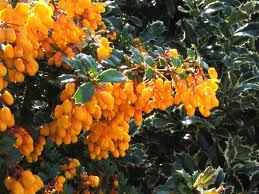

Epine-vinette ou Berberis

Epine-vinette ou Berberis (Berberis vulgaris de la famille des Berbéridacées)
Peu toxique.
Partie toxique pour les chats en général et le Korat en particulier :
Tout sauf les baies mais surtout les racines.
Symptômes du processus pathologique :
Vomissements, diarrhées, problèmes rénaux.
Origine de la toxicité (principe actif) :
Berbérine.